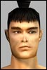

| Pages (3): « 1 [2] 3 » |  Last Thread Next Thread Last Thread Next Thread  |
| Author | Thread |
| Yazule Supa Leet  Registered: Jul 2001 | Re: Ya know... quote:Question for you. What is the most common excuse used in any game when someone loses a pvp fight? Answer: Dude I was lagged! ROFLOL ... the DuD3'5 use that line most btw I run on a *decent box* with DSL and lag is lag iis lag, we all have it and all die to it (most of the time not to players as I have found). I have a friend who runs a TOP OF THE LINE alienware, not 2 months old, and when he zones in he lags. It has been around since the birth of mmorpg's and pvp online. Funcom just shows us how bad it can actually be! quote:Hey man thanks a ton, I am always apriciative of a hand up from a non pvper on pvp issues  Ill make a pvper out of you yet  |
 November 28th, 2001 15:48 November 28th, 2001 15:48 | #21 |
| Mor Phear Leet Registered: May 2001 | Well... nice debate guys, but this won't help me anyway. I just quit AO now, and may play on and off till my time is up, or I find another game. In a way, the anti-pvpers (carebears or whatever u want to call them) are right. Because the problem I have had, is Funcom was trying to please both sides... in the end the PvPers got only a small lil piece of land, within a carbear world. Might as well just give the rest away. A pvp server I feel could fix this, but we all know it is never gonna happen. |
| November 29th, 2001 00:05 | #22 |
| Kirrana Soleet  Registered: Nov 2001 | Hes got a point First people that post about quitting AO, why tell us do you really think I care about some person I never met gave up and game I play. I gave up coffee last week but I did not feel and need to inform everyone in the supermarket I stopped drinking it. Fine you quit so what in fact I am happy thats a bit less lag for me now. Ok PVP. If you dont like why go in those zones, cause thats where the missions are of course. You think people would go there in they had a choice no. But the strongest point would be what effect would allowing the non P v P roleplayers have. Well no the only people to miss out from they not being attacked would be the cheap grid campers and mission area campers. I would not mind P v P if I thought it was some how fair but the P v P just over equip hack out a char for it and will use and dirty trick in the book to claim they are some how better. You might point out this is part of the game, but all I have seen so far is large groups picking on the odd person, people going to missions and the odd newbie in the wrong area. I do not see how allowing the people that wish to opt out of P v P is going to harm anyone. |
| November 29th, 2001 00:42 | #23 |
| NicholaSix Supa Leet  Registered: Nov 2001 | AH, Pong one of the first PVP games. AO's PvP needs a ton of help. A ton of help. The game engine is bad for it. The game balance is bad for it. And sadly enough, PONG took more skill, less intelligence maybe, but more skill by far. As far as PVP games go this one has nothing on games like quake, wolf, UT, HL or just about any FPS game. Heck it's got nothing on non-fps games like MYTH. I too have been playing video games for far longer than I want to recall. I really hope they make some major fixes in it, goals, objectives, lose the whole gas thing all together. AO is really not a very big community. If some areas were mayhem and the rest political, the game would be much more interesting. The thing is, there is no sense of risk in the game now. Even before this latest patch I'd whompa right into 2ho (I'm a clanner) and if 6 people attacked me at once I still had plenty of time to stroll back into the whompa. Once I gridded in and was camped by 4 guys, fired my MK and headed off to the whompa, was attacked by 3 more guys on the way. Whomped out no problem 50% heal left and not even a gradual bump in my pulse. Some rocket scinetist asked me after I whomped "Why u run?" I said, "Why u think?" 2ho is g@3 PVP needs much help and pvp zones need to be in places people HAVE to go to. Ever wonder around ESB as a clanner? Funny thing is there are no omni there except in 2ho. PVP in this game is reduced to camping zones, and running into zones. There are vast PVP areas and most are deserted. BTW, started a lowbie clanner, 26 now will bump her to 30 or so and set off in these expanses looking for action. Hope some of you omni are there. |
| November 29th, 2001 01:06 | #24 |
| Mor Phear Leet Registered: May 2001 | Re: Hes got a point quote:Look Missy, I don't give a crap who you are. Do understand that yet? Im not sure you seem to understand... see you are not the sole reason why people exist. I send my goodbye to the *people I know*. Sure some liked me and some didn't. You on the other hand... well I have no clue who the hell u even are lol. Why respond to post to someone that don't care that u even exist? Now I see why people use the term "fanboy" Heck... I defended the game quite a bit, and yet find some real far out fanboys who bash the the other fanboys that are not as much of a fanboy as them.... err something like that. |
| November 29th, 2001 01:17 | #25 |
| Kirrana Soleet Registered: Nov 2001 | Oh dear Mor, Did I upset you, well I am sorry but see if you are leaving and saying good bye to your friends then so be it. But you see so many people feel they need to broadcast the fact to everyone when they do. Sadly this has nothing to do about saying good bye but is just a dig at funcom and the game. They have a right to point out problems in the game but they feel by quitting it sort of underlines the fact why they are quitting. Its all most like saying funcom if you dont want me to leave them you must fix this problem and beg me to stay. Sorry but that was the tone of your post it was hardly a good bye statement to your friends. |
| November 29th, 2001 01:36 | #26 |
| Mor Phear Leet Registered: May 2001 | quote:I quit, but felt I should say goodbye. Did I need to give a reason why I quit? Nah... but people almost always ask why afterward. Do I care that *you* are not able to handle anything negative said about AO? No... quote:You're not to smart are you? Do you feel I have hope that Funcom would change their whole game for me? I am quiting and my hope is gone now. To think a company would change their whole game for one person, is strange, let alone this is Funcom were talking about. Last edited by Mor on November 29th, 2001 at 01:57 |
| November 29th, 2001 01:54 | #27 |
| Yazule Supa Leet Registered: Jul 2001 | Re: Hes got a point quote:There are always ALWAYS missions in nonpvp zones. Lets start there. So you want the PHAT LEWT! So you go there, KNOWING where you are going but saying that there is something wrong if you are attacked? quote:Frankly, no offense, it is quite obvious that you do not pvp. How does that give you the right to judge the system? How much pvp have you actually seen? I really would like to know! In all actuality there are a *few* people that are unsavory and many that are trying to play the game. Why dont you read my post above about why I pvp and then come back and talk to me. I deal with people hunting in teams or going to missoins that are complete idiots, you dont think SOME of them are actually pvping TOO! You do not have enough experience with it to really know what you are talking about. It is not stupidity, it is ignorance. I suggest you do some pvping, get a title (after all, we only fight "helpless" people). Should be easy right? You will find that most people that dont want to fight will get away to a zone or whatever. And the rest who say they didnt want it LOST. Go get some more info, collect some data on it and then come back. You will most assuredly say "there is a very nice group of pvpers out there that have a few bad apples". bah.. your not worth the time. |
| November 29th, 2001 09:37 | #28 |
| Shadelore Not quite so harmless  Registered: Sep 2001 | PvP is fun when fighting for something worthwhile, like massacring clanners in DAV fighting over hunting grounds or smacking a 6k AS in the head of some lameass gridcamping you at H2O when you are on the way somewhere. Fact is there are things fun fighting for allrdy, and I sure more will come, so hang in there... |
| November 29th, 2001 13:39 | #29 |
| Kirrana Soleet Registered: Nov 2001 | P v P Ok I will use this weak as an example. Tuesday. My friend an MP was fighting in the arena against and enforcer bother about level 35. But some level 100 MP hid in the far side of the arena and decided to send his pet over to help the enforcer. Also you cannot miss the people around level 40 who some how is wondering around in Omni-Pol Elite. I dont have to PvP much to understand it I can see with my damn eyes. Tuesday night The clans invade 4 holes and 30-40 people sat around picking off the odd Omni person arriving to do missions. This is hardly the fair P v P people talk about. Wednesday night. After the patch I noted to high level clan members doing something strange they where hanging around the wompa in H20. They kept zoning back and forth and waiting by the wompa. It was quite clear they where using 15 secs rule to take advantage. So I am sorry but from what I have seen, grid campers in H2O, people camping missions zones trying to get you coming out half strenght. I know not everyone cheats in P v P, if you want to P v P fine. But Yazule and others instead of picking up on things you feel happy to respond to perhaps you would like to answer the real question here. What harm would having an application form which allows you to opt out of P v P if you wanted. The only people to be affected would be grid campers |
| November 29th, 2001 15:09 | #30 |
| NicholaSix Supa Leet Registered: Nov 2001 | AS bad as 2ho is it's still better than arena pvp. the arena is for the ubertwink gladiators. See the level 20 meta next to you in full omni assault and a decus coat. If you are wondering, yes the armor is all 50+ in ql. The belt is 4 slot. And that hammer? yep around ql110. Same with most of the people next to him. But these guys can't go to 2ho. The arena is the only place they can play safely. If they go to SWB they'll get ganked. If they go to 2ho they'll get ganked or everyone will be too high. Low level clan's can't go to 2ho anyway because of the guards. So there really is no action for the uber twinks but the arena. Since all of them are looking for titles and each class hits its twink peek at a different level most of them refuse to fight eachother. Typical arena. 10 guys sitting around waiting for one stupid noob to come by then everyone chimes in at once "hey doof want to duel?" response is usually no. I made one of these, but got so bored trying to find someone to fight i just started leveling her again thinking to go hunt some other areas. But as a level15 (this MA's peek) I had a 4 slot belt on, ql 50 armor and coat, ql 40 nurilizer pads, use a ql114 BOP, had all ql50 implants in for combat and had ql50 implants for comp lit and armor equiping in a bag and could use restore essence. |
| November 29th, 2001 16:30 | #31 |
| dropcid Supa Leet  Registered: Nov 2001 | Re: Re: For Those of Us Who DON'T PvP... quote:Mommy! I touched the fire and it hurt! How come I can't touch fire! It's not fair! WAAAAAAAAAAAAAAAAHHHHHHHHHHH!!!!! They need to invent a new fire that I can touch! Anti-Pvpers- avoid the pvp zones. It's just that simple. Go shop in newland or something. This is a conflict based game. Go smoke your herb, sing your songs, and have your peace rallies somewhere else. And for god sakes, cut your hair and take a shower! -D |
| November 29th, 2001 16:37 | #32 |
| Laeni Supa Leet  Registered: Nov 2001 | I haven't died once to a pvp. That is because I avoid pvp zones. But it concerns me because I saw an old game Meridian59 die much much faster than it should have because 3DO did nothing to stop the out of control pvpers from jumping every low level that came along and killing them. People could not even level because they were dying so much. It got so bad that people left the game in droves because they simply could not play. The pvpers wouldn't let them. And then these guys would strut and brag about how great they were because they killed some newbie who was 20 levels lower than they were. So yeah I guess I got some hostility towards these kind of pvpers. If you are not this kind, if you are one of the honorable ones, then I'm not talking about you. Fortunately in this game, people can avoid the pvp zones. But for the times when they absolutely must enter one of these zones well I think the diplomatic immunity given by a crat would be the best compromise plus it would add to the value of the profession. |
| November 29th, 2001 21:13 | #33 |
| Mor Phear Leet Registered: May 2001 | Re: Re: Re: For Those of Us Who DON'T PvP... quote:LOL |
| November 30th, 2001 03:18 | #34 |
| Federot Leetas  Registered: Nov 2001 | See...one thing that most non-PvPers don't understand: You don't HAVE to go through 2H0 to get to anywhere. You don't HAVE to go through MMD to get to anywhere. You don't HAVE to go through 4Holes to get to anywhere. These are PvP hotspots, and it is VERY well known. Go around if you don't like it. Don't take missions right in the middle of 2H0 (which is tiny btw). Even MMD has been changed (its like a tiny little arena now...most idiotic PvP area there is). You can now grid into MMD, SAVE there....go do all you like in Mort/Perpet Wastes, save in MMD and grid out....never even being at risk of PvP. Try gridding to Newland and go on your merry way...you can reach any zone you like...without ever stepping into a PvP "hotspot". DAV, CAV, SAV, Belial....all are high level zones with minimal PvP...you will rarely even see anyone around, so these areas are pretty much "mission-friendly". I agree, PvP is messed up now. But the problem is...there is NO risk to anyone anymore. Attackers can set up an ambush and attack people passing through. After their 15 sec of immunity and if the attackers can do 3000+ (normal hp of 100+ level) damage (at half their normal rate) then they "might" succeed in killing the ambushee. Most times the person just gets away. PvP in mayhem zones is slightly pointless. Just finding other people to fight is an effort in futility. Most folks with high titles now are 2 types: 1. Very high level and can kill most anyone that opposes them. 2. Very low level twinked people that can kill anyone in their range, and sit at the arena all day long. -Fed |
| November 30th, 2001 09:29 | #35 |
| Yazule Supa Leet Registered: Jul 2001 | Re: P v P quote: You want to really know the answer to that question? Go look at UO of today. They have "carebear land" where nobody can attack anyone ever. And about 90% of the people went there. It ruined the game completely. Now you are going to say "well they didnt want to pvp". That is not true at all. One of my clan mates who LOVES to pvp went there because SO MANY PEOPLE DID. I like to pvp, I also like to have missions,I like to interact with people, I think that if you know the risks then you are informed. This game is DESIGNED for a pvp element. Get a clue! Get a life! quit whining and learn to pvp! You get 15 seconds now to decide if you want to be there, what more do you want? Heck I can get in my plane and be gone before they can attack me now. as far as a 100 meta helping a 45 in the arena, PETITION, as that is obviously not intended. you want risk free play!.. just go buy UO. 90% of the complaints are 2ho complaints, and you can get to ANY ZONE without going through the 2ho grid. Last edited by Yazule on November 30th, 2001 at 10:22 |
| November 30th, 2001 10:17 | #36 |
| Sohjiro Soleet  Registered: Nov 2001 | I read an interview with developers for NeoCron and they have interesting spin on PVP that they are testing on their servers (at the time of the interview). Basically a character has something called a LawChip that is installed. This chip prevents the character from getting killed by another player, but at the same time increases the requirements to use a new weapon and armor. If a player chooses to have the chip removed, they get the bonus of being able to use better weapons and armor at the cost of being a potential target to other players with LawChips removed. |
| November 30th, 2001 18:25 | #37 |
| Camlost Leet Registered: Nov 2001 | my 2 creds I am no carebear... I can handle pvp. I usually dont whine much. death is not anything else than getting respawned to me. I dont mind if it was a_hardened_clan_agent or "PlayR-K33l@r!". I seldom pvp. reasons are many. my skills and my effort = nothing when fighting ubertwink, healer classes, pet classes and so on. I like a balanced pvp fight, they are just hard to come by. (that i why I like hard core pvp games. no exploits, nothing different from each player but the skills...) that being said (so I can avoid being stamped as griefer or as a cuddly fuzzy warm carebear. I am the unthinkable in-between). I have some things I want to ay 1. (and this is THE number 1) Goin to pvp district? save! and be prepared. you might just be engaged in a pvp fight. (ooh, poisonous sarcasm) 2. You dont have to kill all the greys in sight 3. You really dont have to kill someone over and over again if they dont attack you first. Ok, so yo are opposing sides. But i think it is WRONG to hide behind an rp tag every time someone critisises you for something like this. it is possible to overdo this rp thing. if your rp is of such a nature that it really gets to someone (ooc) you should think twice. (similar to being in-character obusive. that i a bannable offense 4. As someone said up there, different people have different opinions of what i fun with ao. stop bickering over what is best pvp/pvm.. both are important parts of the game. if it was one or the other, we would have one or the other: quake or a game where the story enfolds like a book. 5. someone up there said pvpers are better roleplayers WRONG. and this is pretty obvious. how much playing a role is just pulling the trigger/aka clicking that auto attack button? Unless you are playing the role as ubermensch, never afraid, no remorse, talking is for sissies! I WANT THAT PVP TITLE! (and that was irony) 6. hmm. point six? no, I am done. I think. hmmno, I have to say this I played EQ on Rallos Zek. now that was pvp... if you lost, then say goodbye to your armor. I was a rogue. (spells are for sissies ) So dont you be calling me a whiner or something like that. |
| November 30th, 2001 19:11 | #38 |
| Kinkstaah unimpressed by your post  Registered: Jun 2001 | "5. someone up there said pvpers are better roleplayers WRONG. and this is pretty obvious. how much playing a role is just pulling the trigger/aka clicking that auto attack button? Unless you are playing the role as ubermensch, never afraid, no remorse, talking is for sissies! I WANT THAT PVP TITLE! (and that was irony)" It was a joke. But technically they are the ones taking part *in the story* If the story is a conflict. (Which it inevitably will be) It was a joke. You know, humour, and stuff. I pvp because it is *fun* |
| December 1st, 2001 11:18 | #39 |
| Yazule Supa Leet Registered: Jul 2001 | quote:*sounds like foghorn leghorn* I say, I say that was a joke son! SHEESH Kids these days. |
| December 1st, 2001 14:24 | #40 |
| Pages (3): « 1 [2] 3 » | The saved copy (Funcom's forum archive, saved by the Wayback Machine in 2025) |
All times are GMT.